Генерация отчета по стандарту БРИТ
Генерация отчета с данными, которые используются в ГПБОУ БРИТ с возможностью выбора даты на которую нужно подсчитать текущий возраст студентов.
Включает в себя 3 отчета: Социальный паспорт, Сироты, Учет каждый отчет создается в разрезе групп, образовательных программ, возраста, года рождения, пола.
В отчете Социальный паспорт подсчитывается информация по следующим показателям:
Количество обучающщихся,Количество студентов в академе,Количество совершеннолетних,Количество несовершеннолетних,Дети-сироты, Инвалиды Всего, Инвалиды совершеннолетние, Инвалиды несовершеннолетние, Соц стипендия малоимущие,Соц стипендия дети-сироты,Соц стипендия инвалиды, Питание малоимущие, Питание сироты, Питание инвалиды, Питание СВО, Общежитие Всего, Общежитие сироты, Выпуск сироты, Выпуск инвалиды.
В отчете Сироты подсчитывается информация по сиротам:
Всего, Сироты совершеннолетние, Сироты несовершеннолетние, сироты в академе, сироты на постинтернате, сироты на гособеспечении, сироты под опекой, Питаеся всего, Питается в ПОО, Получает компенсацию за питание, ПОО+компенсация.
В отчете Учет подсчитываются данные:
КДН ПДН, Внутренний учет, Самовольный уход, СОП.
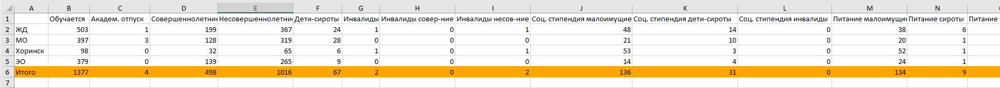
Генерация пользовательского отчета
Генерация отчета по выбранным пользователем значениям с возможностью выбора даты на которую нужно подсчитать текущий возраст студентов.
Пользователь создает файл xlsx в котором, указывает название колонок и значения в этих колонках которые ему необходимо подсчитать.
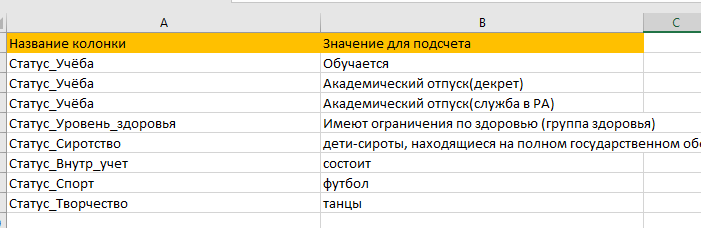В итоге создается файл в котором 5 kbcnjd листа: Общий свод, Свод по файлам, Свод по возрастам, Свод по годам рождения, Свод по полам, Свод по образовательным программам.
На листе Общий свод указано сколько в общем студентов имеют указанное значение в выбранной колонке.
На листе Свод по файлам указано сколько студентов в каждой группе (филиале) имеют указанное значение в выбранной колонке.
На листе Свод по возрастам указано сколько студентов в разрезе возраста имеют указанное значение в выбранной колонке.
На листе Свод по годам рождения указано сколько студентов в разрезе годов рождения имеют указанное значение в выбранной колонке.
На листе Свод по полам указано сколько студентов в разрезе полов имеют указанное значение в выбранной колонке.
На листе Свод по ОП указано сколько студентов в разрезе образовательных программ имеют указанное значение в выбранной колонке.
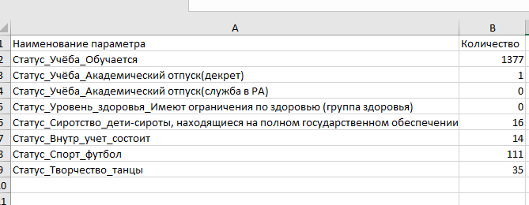 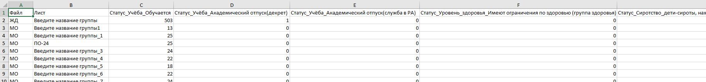Создание сводных таблиц
Создаются файлы в котором содержатся распределения по всем колонкам начинающимся со слов Статус_.,Список_.,Подсчет_. в разрезе групп, образовательных программ, возраста, года рождения, пола.
Программа обработает ваши добавленные.
Производится подсчет количества обучающихся, студентов в академическом отпуске по всем специальностям и группам по отдельности.
Производится подсчет студентов по СПО-1.
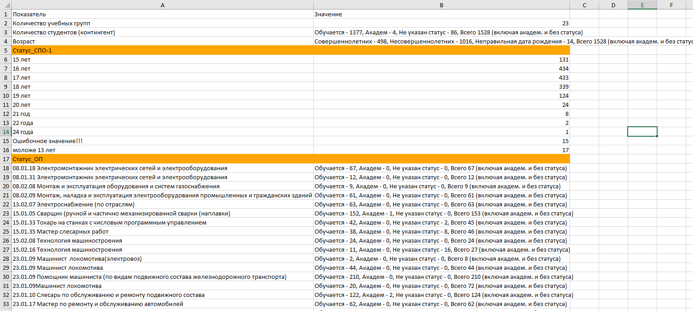Создание списков для проверки цифр полученных в отчете по стандарту БРИТ и пользовательского отчета
Создается файл разделенный на множество листов. В каждом листе указаны все данные студентов на основании которых было посчитано то или иное число в отчете по стандарту БРИТ или в пользовательском отчете.
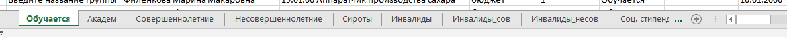 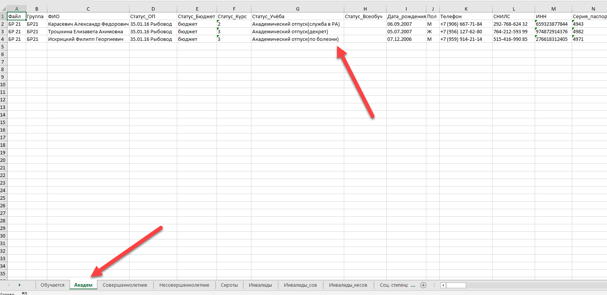Создание файла с данными льготников для внесения в шаблон ЕГИССО
Предварительно заполняется файл с параметрами ЕГИССО где для каждой льготы используемой в эталоне, устанавливается соответствие с данными ЕГИССО
В зависимости от заполнения этого файла программа работает в двух вариантах:
Если файл с параметрами ЕГИССО заполнен, то программа генерирует 3 файла и создает папку:
1) Файл с ошибками в персональных данных.
2) Файл, где указаны получатели льгот для которых не было найдено сопоставление в файле Параметры ЕГИССО, льготы для которых не было найдено получателей.
3) Файл с полными данными, в котором такой же порядок что и в шаблоне ЕГИССО. Нужно только скопировать и вставить данные в шаблон.
Папка в которой создаются списки получателей льгот по группам в удобном для печати виде. Список содержит следующие колонки:
Порядковый номер, Льгота, Категория льготы, Группа, ФИО, Реквизит документа дающего право на льготу, Срок окончания.
Если файл с параметрами ЕГИССО не заполнен то, создается 2 файла: файл без ошибок в оформлении и файл с ошибками.
Создание 2 файлов: файл без ошибок в оформлении и файл с ошибками.
Создаются листы:
Общий лист где указаны все льготники и их данные.
Листы по отдельным льготам.
Каждый из файлов содержит персональные данные льготников при этом они выстроены в том порядке который используется в ЕГИССО.
СНИЛС (автоматически приводится к виду требуемому ЕГИССО), Фамилия, Имя, Отчество, Пол,Дата рождения,Тип документа (пустой), Серия паспорта, Номер паспорта, Дата выдачи паспорта, Кем выдан.
Дополнительно добавляются 5 колонок для облегчения заполнения файла ЕГИССО:
Льгота (наименование льготы), Статус_льготы (значение льготы например дети-сироты под опекой или дети сироты на полном гособеспечении),Реквизиты документа подтверждаюющего льготу, Дата окончания льготы, Наименование файла (откуда взяты данные).
Все эти данные берутся из файлов с данными студентов.
В файле с ошибками указываются те льготники чье персональные данные заполнены с ошибками.
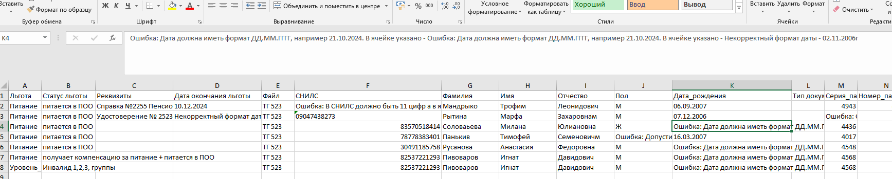
Проверка заполнения колонок персональных данных студентов
Программа автоматически при обработке проверяет персональные данные студентов на корректность заполнения (не пропущена ли цифра, заполнена ли ячейка). Программа не проверяет подлинность персональных данных!!!
Проверяемые колонки: ФИО, Пол, СНИЛС, ИНН, Дата_рождения, Серия_паспорта, Номер_паспорта, Дата_выдачи_паспорта, Код_подразделения, Кем_выдан, Адрес_регистрации, Фактический_адрес
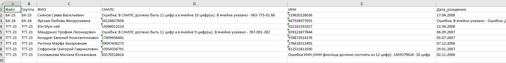Нахождение разницы между двумя списками или двумя отчетами
Зачем нужен такой функционал? Поскольку версия файла с данными студентов куратора и соцпедагога со временем будут все сильнее различаться встает вопрос о том, как найти, где есть расхождение. Например, студент поменял номер телефона, куратор может забыть сообщить об этом соцпедагогу. Чтобы у соцпедагога были актуальные данные студентов можно использовать эту функцию. Также эта функция будет полезной если нужно подсчитать динамику изменений между данными прошлого и нынешнего года. Программа сразу подсчитает абсолютную разницу, процентное изменение и процентное соотношение второго значения к первому (только для числовых показателей).
 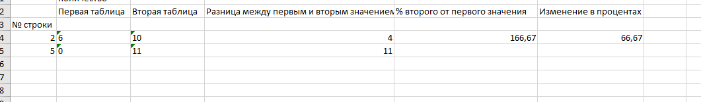
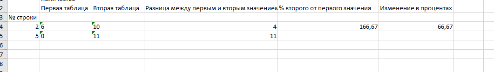
Объединение файлов с данными групп в один
Такое функция нужна в случае если у вас есть филиалы или отделения и вам нужна отчетность не по группам, а по более крупным структурам
Вы соединяете файлы с группами определенного отделения, филиала с помощью этой функции в один файл, где каждый лист это одна группа. Называете получившийся файл наименованием отделения, филиала. Собрав данные с остальных отделений, филиалов создаете стандартный или пользовательский отчет, где будет раскладка по отделениям, филиалам.
Поиск истекающих документов дающих право на льготы
С помощью этой функции можно обнаружить документы у которых в колонке Дата_окончания_Наименование документа дающего право на льготу осталось меньше месяца,2 недель, недели.
Все льготники с истекающими документами помещаются в отдельный файл где с помощью цветной заливки указывается сколько осталось времени:
Красный цвет - если осталось меньше недели до истечения срока.
Оранжевый цвет - если осталось меньше 2 недель.
Желтый цвет - если осталось меньше месяца.
Создаются отдельные листы для каждой льготы, где были обнаружены истекающие документы.
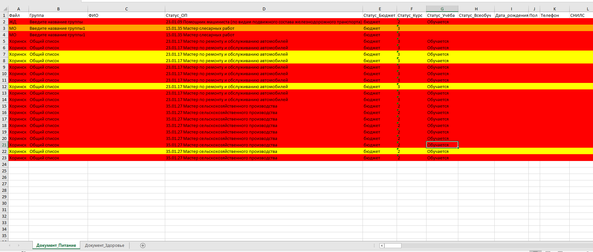Разделение таблицы на несколько частей по уникальным значениям выбранной колонки
Для примера у вас в одном большом файле есть список логинов и паролей для тестирования для каждой группы. Вам нужно распечатать логины и пароли для каждой группы по отдельности. С помощью это функции вам будет достаточно указать порядковый номер колонки, по которой вы хотите разделить таблицу, название листа, где находится таблица и нажать кнопку обработки.
Программа в зависимости от выбранного режима отфильтрует данные по уникальным значения выбранной колонки и сохранит отфильтрованные данные либо в листах одного файла, либо в отдельных файлах.
Очистка списка от ошибок
С ее помощью вы можете провести первичную обработку списка xlsx. Удалить лишние пробельные символы в начале и конце каждой ячейки в таблице, а также между словами.
Для колонок содержащих в названии слова Фамилия,Имя,Отчество, ФИО, сделать так чтобы каждое слово в этих колонках начиналось с большой буквы.
Для колонок название которых содержит слово дата найти неверно заполненные ячейки.
Для колонок название которых содержит слово снилс привести к данные к стандартному виду ХХХ-ХХХ-ХХХ ХХ и найти неверно заполненные ячейки (где больше или меньше цифр чем надо).
Для колонок название которых содержит слово инн привести к формату из 12 цифр (ИНН физического лица) удалив все символы кроме цифр и найти неверно заполненные ячейки (где больше или меньше цифр чем надо).
Для колонок название которых содержит словосочетания (в любом порядке): серия паспорт, номер паспорт, код подразд привести их к стандартному виду и найти неверно заполненные ячейки (где больше или меньше цифр чем надо)..
Для колонок название которых содержит слово телефон удалить все нечисловые символы.
Для колонок названия которых содержат в себе слова электрон почта,e-mail удалить все пробельные символы.
Найти дубликаты в каждой из колонок таблицы с указанием на какой строке оригинальной таблицы они находятся.
Найти случаи смешения русских и английских букв в одном слове с указанием на какой строке они находятся и перечислением какие именно буквы являются смешанными.
Создание однотипных документов docx (Word и его аналоги)
Для примера у вас есть список группы из 30 студентов и вам нужно на каждого из них сделать справку, договор, согласие и т.п. Документы отличается только паспортными данными и реквизитами, и чтобы вам не пришлось 30 раз создавать документ на каждого, вы можете использовать эту программу. Вам нужно будет только указать таблицу с используемыми данными формата Excel и создать шаблон документа в Word указав в этом шаблоне в двойных фигурных скобках {{}} названия колонок из файла с расширением xlsx. После чего программа, беря данные из таблицы и подставляя эти данные в {{}} в шаблоне, создаст вам столько документов сколько строк есть в таблице с сохранением форматирования шаблона.
Можно создавать pdf версии создаваемых документов, можно создавать объединенные файлы (т.е. вместо 100 отдельных документов у вас будет один файл в котором будет находиться 100 документов).
Также можно задавать структуру папок в которых будут сохраняться документы. Достаточно просто указать не более трех порядковых номеров колонок по которым вы хотите рассортировать документы